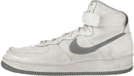
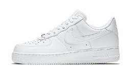

Nike Air Force ONE
Air Force je řada atletických bot vyrobených společností Nike, které začaly letectvem 1 a pokračovaly
v zařazení letectva 2, letectva 3, letectva STS, letectva 5, letectva XXV a letectva 09. Letectvo 1 bylo
vytvořeno designérem Brucem Kilgore a bylo první basketbalovou botou, která používala technologii Nike Air.
Bota je nabízena v nízkých, středních a vysokých topech. Nízké Air Force 1 se většinou nosí.
Tato bota vydělává společnosti Nike ročně odhadem 800 milionu dolarů.
Byla vytvořena roku 1982 návrhářem Brucem Kilgorem, který dodnes pracuje pro Nike.
Nosili ji basketbalisté a zároveň to byla první basketbalová bota, co používala technologii Air.
Takto vypadala původní colorway z roku 1982, kdy bota nenesla název “Air Force 1”, ale jen “Air Force”
Existuje okolo 2000 barevných kombinací. Je to nepředstavitelné množství a i to dělá z Air Force 1 nejprodávanější sportovní botu v historii.
2000 barevných kombinací a spousta kolaborací například s Riccardem Tisci, Supreme, Pigalle, Undefeated a tak dále.
Zajímavosti
- Existuje písnička z roku 2002 inspirovaný těmito teniskami ( Nelly – Air Force Ones )
- Když Air Force 1 roku 1982 vyšly,je skupina jménem “Original Six” ( šest hráčů z šesti týmů ) nosila a dávala jim promo. Jména hráčů:
(Moses Malone;
Michael Cooper;
Jamaal Wilkes;
Bobby Jones;
Mychal Thompson;
Calvin Natt)
- Bota je pojmenovaná podle letadla, kterým létá prezident.
- AF1 je bota, která přivedla Tinkera Hatfielda k designování sneakers místo budov.
| První: Nike Air Force "G Fazo's" |
|

|
| Cena: ??? |
| První vydání: 1982 |
| Nejoblíbenějsí: Nike Air Force 1 Low |
|

|
| Cena: 2 500 |
| První vydání: 1992 |
| Nejdražší: Nike X Off-White - Air Force 1 Low MCA |

|
| Cena: 131 449 Kč |
| První vydání: 2019 |
Air Force 1 nebyly původně nazýváno Air Force. Bruce Kilgore navrhl botu.
Jméno je odkaz na Air Force One, letadlo, kterým létá prezident Spojených států.
Boty se prodávají v 5 různých stylech, nízká, střední, superlow, vysoká a super vysoká.
Uprostřed přichází s připojeným popruhem. Vysoké Air Force 1 přichází se suchým zipem; střední
horní pásek je připevněn k botě, zatímco horní pásek je u některých verzí pohyblivý a odnímatelný.
Ačkoli je bota v různých barvách a barevných paletách, nejvíce oblíbená jsou obyčejné Air Force 1 low v bílé barvě (“bílá na bílé”).